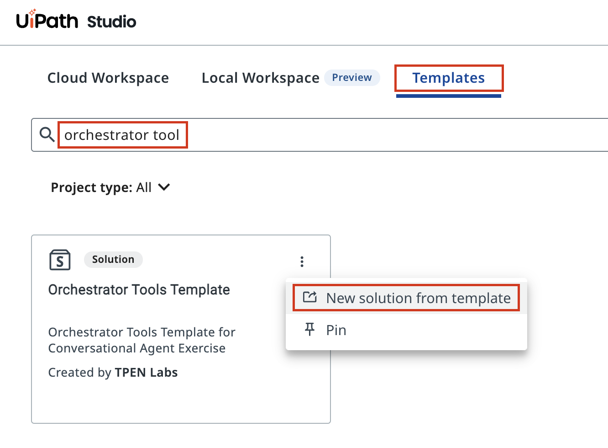
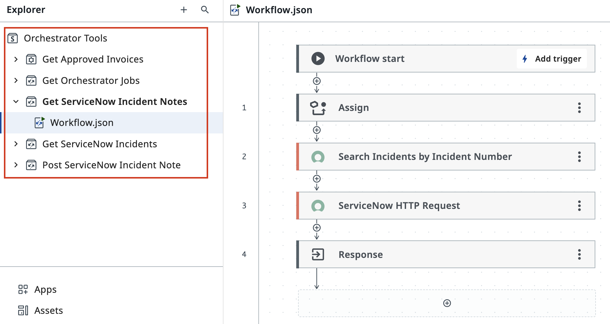
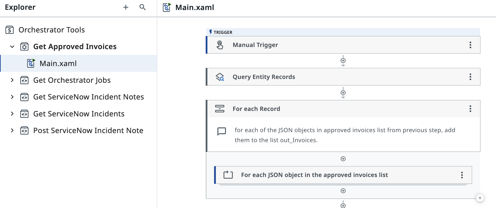
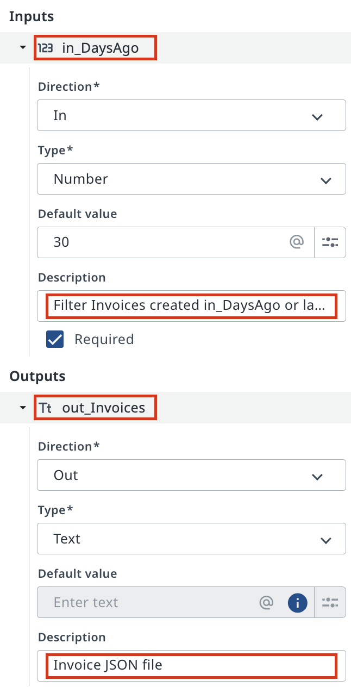

Understanding Available Tools¶
Here is our plan for this lesson:
- Find the Orchestrator Tools template in Studio Web
- Open a tool workflow and understand its structure
- Review how tools process data internally
- Examine tool arguments (inputs and outputs)
Goal¶
In this lesson you'll explore the tools available to your agent by examining their workflows. The tools that we have added are pre-built automations (RPA and API Workflows) that your agent can invoke — understanding what they do and what data they need (inputs) and return (outputs) is essential to configuring your agent correctly.
What Are Tools?¶
Tools are reusable automations built in Studio Web and published to Orchestrator in Orchestrator Tools folder. When your agent needs to do something — query Data Fabric to retrieve invoice data, list ServiceNow incidents or add a note to an Incident — it finds a best matching tool based on it's description and runs it.
Each tool has:
- A workflow — the automation logic inside
- Inputs — data the tool needs to run (e.g., "Invoice ID")
- Outputs — data the tool returns to the agent (e.g., "Invoice details JSON")
Data for Input Arguments is generated based on Argument Descriptions. The tool call creates an Orchestrator Job and waits for results when Job is completed. Agent then reviews the results and continues moving to it's goal, or achieving it and finishing it's own execution.
By reviewing your tools before configuring your agent, you'll understand what your octopus agent can do.
Steps¶
1. Find the Orchestrator Tools template¶
In Studio Web, click the Templates tab to browse available starting templates.
Search for "orchestrator tool" to find the Orchestrator Tools Template — a pre-built solution containing common automation tools.
Open the three-dot menu on the template card and select New solution from template.
You don't need to publish it as tools have already been deployed in Orchestrator. We will only review the source code.

2. Open and examine API workflow¶
Once the template solution loads, expand the Orchestrator Tools folder in the Explorer panel on the left.
You'll see a list of available tools. Select API workflow called Get ServiceNow Incident Notes to start with.

Select Workflow.json under the tool folder to see the automation steps inside.
3. Review RPA tool's implementation¶
Open Get Approved Invoices - RPA workflow that reads data from Data Fabric:

Open the Data Manager panel to see the tool's configuration.
These arguments tell you exactly what to expect when your agent calls this tool. The agent will pass data to inputs and receive data from outputs.

5. Review all available tools¶
Spend a few minutes exploring the other tools. Each one represents an action your agent can take. Each one has description and each of arguments have description. This knowledge ensures your agent will be configured to use the right tools for the right situations. An agent without this context might invoke a tool incorrectly or pick the wrong tool, which could be dangerous.
Your agent is now ready to use these tools confidently - let's give it a try!